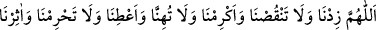
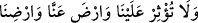

Ömer b. Hattâb (r.a.)’dan rivâyet edildiğine göre Hz. Peygamber (a.s.)’a vahiy
indiğinde onun yanında arı uğultusu gibi ses duyulurdu. Bir keresinde huzurunda bir
müddet bekledik. Sonra kıbleye yöneldi, elini kaldırdı ve şöyle duâ etti:
“Allah’ım bize artır, bizden eksiltme. Bize ikram et, hor kılma. Bize ver, bizi
mahrum kılma. Bizi tercih et, başkalarını bize tercih etme. Bizden râzı ol, bizi râzı
kıl.” Sonra şöyle buyurdu: “Bana on âyet indirildi ki kim onlarla amel ederse cennete
girer.” Sonra “Gerçekten mü’minler kurtuluşa ermiştir.” (el-Mü’minûn, 23/1)
âyetinden îtibaren on âyeti okuyup tamamladı.[110]
Mü’minûn sûresi, 1107 yılı Allah’ın ayı Receb’in 22’sinde (26 Şubat 1696) tamam
oldu.
[104]. Münâvî, V, 483
[105]. Buhârî, Rikak 1. Ayrıca bk. Tirmizî, Zühd 1; İbni Mâce, Zühd 15
[106]. Irâkî, Muğnî, IV, 150
[107]. Aclûnî, II, 173
[108]. Hılye, I, 7
[109]. İbn Kesîr, Tefsir, III, 259
[110]. Tirmizî, Tefsîr, (23), 1; Beyhakî, Delâil, VI, 55